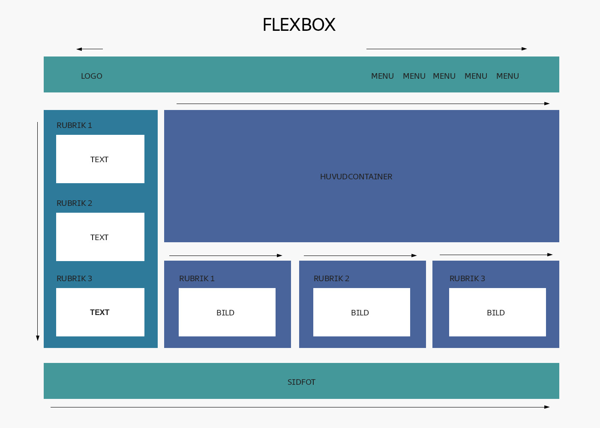

Ska jag använda Flexbox eller CSS Grid?
Flexbox och CSS Grid är två metoder för att bygga upp en layout med CSS. De jämförs ofta med varandra, trots att det är ganska stor skillnad mellan Flexbox och CSS Grid. I det här inlägget delar jag med mig av fördelar och nackdelar med de båda metoderna.
Läs mer här.För- & nackdelar med Flexbox
Flexbox är bra för att strukturera innehållet ... Bra om man behöver lite mer "självständiga flexbarn" som kan ha olika storlekar.

För- & nackdelar med CSS Grid
Bra för att strukturera layouten ... Mindre bra för endimensionella element.

Slutsats
Sammanfattningsvis kan man säga att båda bör användas i din layout...
Grid är också bra om man vill ha kontroll över elementets barn...